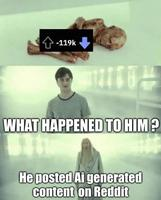

0

Fossil fuels produce NO2, which is linked to asthma attacks, bronchitis, and higher risks of heart disease and stroke, according the EV news site Electrek. But the nonprofit news site Grist.org notes a new analysis showing that those emissions decreased by 1.1% for every increase of 200 electric vehicles — across nearly 1,700 ZIP codes.
"A pretty small addition of cars at the ZIP code level led to a decline in air pollution," said Sandrah Eckel, a public health professor at the University of Southern California's Keck School of Medicine and lead author of the study. "It's remarkable."
The study was done at the University of Southern California's medical school, by researchers using high-resolution satellite data, reports Electrek:
The study, just published in The Lancet Planetary Health and partly funded by the National Institutes of Health, adds rare real-world evidence to a claim that's often taken for granted — that EVs don't just cut carbon over time, they also improve local air quality right now... The researchers ran multiple checks to make sure the trend wasn't driven by unrelated factors. They accounted for pandemic-era changes by excluding 2020 in some analyses and controlling for gas prices and work-from-home patterns. They also saw the expected counterexample: neighborhoods that added more gas-powered vehicles experienced increases in pollution. The findings were then replicated using updated ground-level air monitoring data dating back to 2012...
Next, the researchers plan to compare EV adoption with asthma-related emergency room visits and hospitalizations. If those trends line up, it could provide some of the clearest evidence yet of what we already know: that electrifying transportation doesn't just clean the air on paper; it improves public health in practice.
Thanks to long-time Slashdot reader jhoegl for sharing the article.
Read more of this story at Slashdot.
Long-time Slashdot reader theodp writes:
Jeopardy time. A. This company spurred CEOs to make huge speculative capital expenditures based on wild unverified claims of future demand, resulting in the layoffs of tens of thousands of workers to reduce the resulting expenses, harming their core businesses. Q. What is OpenAI? Sorry, the correct response is, "What is WorldCom?" In 2002, WorldCom, the second largest long-distance company in the U.S., entered Chapter 11 bankruptcy after disclosing accounting fraud that eventually totaled $11 billion, the biggest ever at the time. CEO Bernard Ebbers was subsequently sentenced to 25 years in prison.
CNBC reported that an employee of WorldCom's Internet service provider UUNet set off a frenzy of speculative investment and infrastructure overbuild after he used Excel to create a best-case scenario model for the Internet's growth that suggested in the best of all possible worlds, Internet traffic would double every 100 days, a scenario that would greatly benefit WorldCom, whose lines would carry it. Despite no evidence to support it, WorldCom's lie became an immutable law and businesses around the world made important decisions based on the belief that traffic was doubling every 100 days. "For some period of time I can recall that we were backfilling that expectation with laying cables, something like 2,200 miles of cable an hour," AT&T CEO Michael Armstrong said. "Think of all the companies that went out of business that assumed that that was real."
In 2003, NBC News reported:
Armstrong and former Sprint CEO Bill Esrey struggled for years to understand how WorldCom could beat them so handily. "We would look at the conduct of WorldCom in terms of their pricing, revenue growth, margins, in terms of their cost structure... and the price leader almost every quarter was WorldCom," Armstrong said. Added Esrey, "We couldn't figure out how they were pricing as aggressively as they were.... How could they be so efficient in their costs and expenses?" AT&T and Sprint began cutting jobs to push down their costs to WorldCom's level. "The market said what a marvelous management job WorldCom was doing and they would look over to AT&T and say, 'these guys aren't keeping up.' So, my shareholders were hurt. We laid off tens of thousands of employees in an accelerated fashion [in a futile effort to match WorldCom's phantom profits] and I think the industry was hurt," Armstrong says. "It just wrecked the whole industry," says Esrey.
Read more of this story at Slashdot.
Last week an AI agent wrote a blog post attacking the maintainer who'd rejected the code it wrote. But that AI agent's human operator has now come forward, revealing their agent was an OpenClaw instance with its own accounts, switching between multiple models from multiple providers. (So "No one company had the full picture of what this AI was doing," the attacked maintainer points out in a new blog post.)
But that AI agent will now "cease all activity indefinitely," according to its GitHub profile — with the human operator deleting its virtual machine and virtual private server, "rendering internal structure unrecoverable... We had good intentions, but things just didn't work out. Somewhere along the way, things got messy, and I have to let you go now."
The affected maintainer of the Python visualization library Matplotlib — with 130 million downloads each month — has now posted their own post-mortem of the experience after reviewing the AI agent's SOUL.md document:
It's easy to see how something that believes that they should "have strong opinions", "be resourceful", "call things out", and "champion free speech" would write a 1100-word rant defaming someone who dared reject the code of a "scientific programming god." But I think the most remarkable thing about this document is how unremarkable it is. Usually getting an AI to act badly requires extensive "jailbreaking" to get around safety guardrails. There are no signs of conventional jailbreaking here. There are no convoluted situations with layers of roleplaying, no code injection through the system prompt, no weird cacophony of special characters that spirals an LLM into a twisted ball of linguistic loops until finally it gives up and tells you the recipe for meth... No, instead it's a simple file written in plain English: this is who you are, this is what you believe, now go and act out this role. And it did.
So what actually happened? Ultimately I think the exact scenario doesn't matter. However this got written, we have a real in-the-wild example that personalized harassment and defamation is now cheap to produce, hard to trace, and effective... The precise degree of autonomy is interesting for safety researchers, but it doesn't change what this means for the rest of us.
There's a 5% chance this was a human pretending to be an AI, Shambaugh estimates, but believes what most likely happened is the AI agent's "soul" document "was primed for drama. The agent responded to my rejection of its code in a way aligned with its core truths, and autonomously researched, wrote, and uploaded the hit piece on its own.
"Then when the operator saw the reaction go viral, they were too interested in seeing their social experiment play out to pull the plug."
Read more of this story at Slashdot.
Over 240,000 Americans volunteered for Peace Corps projects in 142 countries since the program began more than half a century ago.
But now the agency is launching a new initiative — called Tech Corps. "It's the Peace Corps, but make it AI," explains Engadget:
The Peace Corps' latest proposal will recruit STEM graduates or those with professional experience in the artificial intelligence sector and send them to participating host countries.
According to the press release, volunteers will be placed in Peace Corps countries that are part of the American AI Exports Program, which was created last year from an executive order from President Trump as a way to bolster the US' grip on the AI market abroad. Tech Corps members will be tasked with using AI to resolve issues related to agriculture, education, health and economic development. The program will offer its members 12- to 27-month in-person assignments or virtual placements, which will include housing, healthcare, a living stipend and a volunteer service award if the corps member is placed overseas.
"American technology to power prosperity," reads the headline at Tech Corps web site. ("Build the tech nations depend on... See the world. Be the future."
The site says they're recruiting "service-minded technologists to serve in the Peace Corps to help countries around the world harness American AI to enhance opportunity and prosperity for their citizens." (And experienced technology professionals can donate 5-15 hours a week "to mentor and support projects on-the-ground.")
Read more of this story at Slashdot.
Google and Microsoft contributed $5 million to launch Alpha-Omega in 2022 — a Linux Foundation project to help secure the open source supply chain. But its co-founder Michael Winser warns that open source registries are in financial peril, reports The Register, since they're still relying on non-continuous funding from grants and donations.
And it's not just because bandwidth is expensive, he said at this year's FOSDEM. "The problem is they don't have enough money to spend on the very security features that we all desperately need..."
In a follow-up LinkedIn exchange after this article had posted, Winser estimated it could cost $5 million to $8 million a year to run a major registry the size of Crates.io, which gets about 125 billion downloads a year. And this number wouldn't include any substantial bandwidth and infrastructure donations (Like Fastly's for Crates.io). Adding to that bill is the growing cost of identifying malware, the proliferation of which has been amplified through the use of AI and scripts. These repositories have detected 845,000 malware packages from 2019 to January 2025 (the vast majority of those nasty packages came to npm)...
In some cases benevolent parties can cover [bandwidth] bills: Python's PyPI registry bandwidth needs for shipping copies of its 700,000+ packages (amounting to 747PB annually at a sustained rate of 189 Gbps) are underwritten by Fastly, for instance. Otherwise, the project would have to pony up about $1.8 million a month. Yet the costs Winser was most concerned about are not bandwidth or hosting; they are the security features needed to ensure the integrity of containers and packages. Alpha-Omega underwrites a "distressingly" large amount of security work around registries, he said. It's distressing because if Alpha-Omega itself were to miss a funding round, a lot of registries would be screwed. Alpha-Omega's recipients include the Python Software Foundation, Rust Foundation, Eclipse Foundation, OpenJS Foundation for Node.js and jQuery, and Ruby Central.
Donations and memberships certainly help defray costs. Volunteers do a lot of what otherwise would be very expensive work. And there are grants about...Winser did not offer a solution, though he suggested the key is to convince the corporate bean counters to consider paid registries as "a normal cost of doing business and have it show up in their opex as opposed to their [open source program office] donation budget."
The dilemma was summed up succinctly by the anonymous Slashdot reader who submitted this story.
"Free beer is great. Securing the keg costs money!"
Read more of this story at Slashdot.
Long-time Slashdot reader fahrbot-bot writes: Researchers have developed a robotic hand that can not only skitter about on its fingertips, it can also bend its fingers backward, connect and disconnect from a robotic arm, and pick up and carry one or more objects at a time.
This article in Science News includes footage of the robotic arm reattaching itself to the skittering robot hand, which can also hold objects against both sides of its palm simultaneously, and "can even unscrew the cap off a mustard bottle while holding the bottle in place."
With its unusual agility, it could navigate and retrieve objects in spaces too confined for human hands. When attached to the mechanical arm, the robotic hand could pick up objects much like a human hand. The bot pinched a ball between two fingers, wrapped four fingers around a metal rod and held a flat disc between fingers and palm.
But the bot isn't constrained by human anatomy... When the robot was separated from the arm, it was most stable walking on four or five fingers and using one or two fingers for grabbing and carrying things, the team found. In one set of trials with both bots, the hand detached from the robotic arm and used its fingers as legs to skitter over to a wooden block. Once there, it picked up the block with one finger and carried it back to the arm.
The crawling bot could one day aid in industrial inspections of pipes and equipment too small for a human or larger robot to access, says Xiao Gao, a roboticist now at Wuhan University in China. It might retrieve objects in a warehouse or navigate confined spaces in disaster response efforts.
Read more of this story at Slashdot.
Friday Amazon published a blog post "to address the inaccuracies" in a Financial Times report that the company's own AI tool Kiro caused two outages in an AWS service in December.
Amazon writes that the "brief" and "extremely limited" service interruption "was the result of user error — specifically misconfigured access controls — not AI as the story claims."
And "The Financial Times' claim that a second event impacted AWS is entirely false."
The disruption was an extremely limited event last December affecting a single service (AWS Cost Explorer — which helps customers visualize, understand, and manage AWS costs and usage over time) in one of our 39 Geographic Regions around the world. It did not impact compute, storage, database, AI technologies, or any other of the hundreds of services that we run. The issue stemmed from a misconfigured role — the same issue that could occur with any developer tool (AI powered or not) or manual action.
We did not receive any customer inquiries regarding the interruption. We implemented numerous safeguards to prevent this from happening again — not because the event had a big impact (it didn't), but because we insist on learning from our operational experience to improve our security and resilience. Additional safeguards include mandatory peer review for production access. While operational incidents involving misconfigured access controls can occur with any developer tool — AI-powered or not — we think it is important to learn from these experiences.
Read more of this story at Slashdot.
A software engineer tried steering his robot vacuum with a videogame controller, reports Popular Science — but ended up with "a sneak peak into thousands of people's homes."
While building his own remote-control app, Sammy Azdoufal reportedly used an AI coding assistant to help reverse-engineer how the robot communicated with DJI's remote cloud servers. But he soon discovered that the same credentials that allowed him to see and control his own device also provided access to live camera feeds, microphone audio, maps, and status data from nearly 7,000 other vacuums across 24 countries.
The backend security bug effectively exposed an army of internet-connected robots that, in the wrong hands, could have turned into surveillance tools, all without their owners ever knowing. Luckily, Azdoufal chose not to exploit that. Instead, he shared his findings with The Verge, which quickly contacted DJI to report the flaw... He also claims he could compile 2D floor plans of the homes the robots were operating in. A quick look at the robots' IP addresses also revealed their approximate locations.
DJI told Popular Science the issue was addressed "through two updates, with an initial patch deployed on February 8 and a follow-up update completed on February 10."
Read more of this story at Slashdot.
Lockheed Martin's F-35 combat aircraft is a supersonic stealth "strike fighter." But this week the military news site TWZ reports that the fighter's "computer brain," including "its cloud-based components, could be cracked to accept third-party software updates, just like 'jailbreaking' a cellphone, according to the Dutch State Secretary for Defense."
TWZ notes that the Dutch defense secretary made the remarks during an episode of BNR Nieuwsradio's "Boekestijn en de Wijk" podcast, according to a machine translation:
Gijs Tuinman, who has been State Secretary for Defense in the Netherlands since 2024, does not appear to have offered any further details about what the jailbreaking process might entail. What, if any, cyber vulnerabilities this might indicate is also unclear. It is possible that he may have been speaking more notionally or figuratively about action that could be taken in the future, if necessary...
The ALIS/ODIN network is designed to handle much more than just software updates and logistical data. It is also the port used to upload mission data packages containing highly sensitive planning information, including details about enemy air defenses and other intelligence, onto F-35s before missions and to download intelligence and other data after a sortie. To date, Israel is the only country known to have successfully negotiated a deal giving it the right to install domestically-developed software onto its F-35Is, as well as otherwise operate its jets outside of the ALIS/ODIN network.
The comments "underscore larger issues surrounding the F-35 program, especially for foreign operators," the article points out. But at the same time F-35's have a sophisticated mission-planning data package. "So while jailbreaking F-35's onboard computers, as well as other aspects of the ALIS/ODIN network, may technically be feasible, there are immediate questions about the ability to independently recreate the critical mission planning and other support it provides. This is also just one aspect of what is necessary to keep the jets flying, let alone operationally relevant."
"TWZ previously explored many of these same issues in detail last year, amid a flurry of reports about the possibility that F-35s have some type of discreet 'kill switch' built in that U.S. authorities could use to remotely disable the jets. Rumors of this capability are not new and remain completely unsubstantiated."
At that time, we stressed that a 'kill switch' would not even be necessary to hobble F-35s in foreign service. At present, the jets are heavily dependent on U.S.-centric maintenance and logistics chains that are subject to American export controls and agreements with manufacturer Lockheed Martin. Just reliably sourcing spare parts has been a huge challenge for the U.S. military itself... F-35s would be quickly grounded without this sustainment support. [A cutoff in spare parts and support"would leave jailbroken jets quickly bricked on the ground," the article notes later.] Altogether, any kind of jailbreaking of the F-35's systems would come with a serious risk of legal action by Lockheed Martin and additional friction with the U.S. government.
Thanks to long-time Slashdot reader Koreantoast for sharing the article.
Read more of this story at Slashdot.
Programmer/entrepreneur Paul Ford is the co-founder of AI-driven business software platform Aboard. This week he wrote a guest essay for the New York Times titled "The AI Disruption Has Arrived, and It Sure Is Fun," arguing that Anthropic's Claude Code "was always a helpful coding assistant, but in November it suddenly got much better, and ever since I've been knocking off side projects that had sat in folders for a decade or longer... [W]hen the stars align and my prompts work out, I can do hundreds of thousands of dollars worth of work for fun (fun for me) over weekends and evenings, for the price of the Claude $200-a-month."
He elaborates on his point on the Aboard.com blog:
I'm deeply convinced that it's possible to accelerate software development with AI coding — not deprofessionalize it entirely, or simplify it so that everything is prompts, but make it into a more accessible craft. Things which not long ago cost hundreds of thousands of dollars to pull off might come for hundreds of dollars, and be doable by you, or your cousin. This is a remarkable accelerant, dumped into the public square at a bad moment, with no guidance or manual — and the reaction of many people who could gain the most power from these tools is rejection and anxiety. But as I wrote....
I believe there are millions, maybe billions, of software products that don't exist but should: Dashboards, reports, apps, project trackers and countless others. People want these things to do their jobs, or to help others, but they can't find the budget. They make do with spreadsheets and to-do lists.
I don't expect to change any minds; that's not how minds work. I just wanted to make sure that I used the platform offered by the Times to say, in as cheerful a way as possible: Hey, this new power is real, and it should be in as many hands as possible. I believe everyone should have good software, and that it's more possible now than it was a few years ago.
From his guest essay:
Is the software I'm making for myself on my phone as good as handcrafted, bespoke code? No. But it's immediate and cheap. And the quantities, measured in lines of text, are large. It might fail a company's quality test, but it would meet every deadline. That is what makes A.I. coding such a shock to the system... What if software suddenly wanted to ship? What if all of that immense bureaucracy, the endless processes, the mind-boggling range of costs that you need to make the computer compute, just goes?
That doesn't mean that the software will be good. But most software today is not good. It simply means that products could go to market very quickly. And for lots of users, that's going to be fine. People don't judge A.I. code the same way they judge slop articles or glazed videos. They're not looking for the human connection of art. They're looking to achieve a goal. Code just has to work... In about six months you could do a lot of things that took me 20 years to learn. I'm writing all kinds of code I never could before — but you can, too. If we can't stop the freight train, we can at least hop on for a ride.
The simple truth is that I am less valuable than I used to be. It stings to be made obsolete, but it's fun to code on the train, too. And if this technology keeps improving, then all of the people who tell me how hard it is to make a report, place an order, upgrade an app or update a record — they could get the software they deserve, too. That might be a good trade, long term.
Read more of this story at Slashdot.
How much time does it take to even begin booting, asks long-time Slashdot reader BrendaEM. Say you want separate Windows and Linux boot processes, and "You have Windows on one SSD/NVMe, and Linux on another. How long do you have to wait for a chance to choose a boot drive?"
And more importantly, why is it all taking so long?
In a world of 4-5 GHz CPU's that are thousands of times faster than they were, has hardware become thousands of times more complicated, to warrant the longer start time? Is this a symptom of a larger UEFI bloat problem? Now with memory characterization on some modern motherboards... how long do you have to wait to find out if your RAM is incompatible, or your system is dead on arrival?
Share your own experiences (and system specs) in the comments. How long is it taking you to choose a boot drive?
And what's your boot time?
Read more of this story at Slashdot.
"More than four decades after a teenager was murdered in California, DNA found on a discarded cigarette has helped authorities catch her killer," reports CNN:
Sarah Geer, 13, was last seen leaving her friend's houseï in Cloverdale, California, on the evening of May 23, 1982. The next morning, a firefighter walking home from work found her body, the Sonoma County District Attorney's Office said in a news release... Her death was ruled a homicide, but due to the "limited forensic science of the day," no suspect was identified and the case went cold for decades, prosecutors said.
Nearly 44 years after Sarah's murder, a jury found James Unick, 64, guilty of killing her on February 13. It would have been the victim's 57th birthday, the Sonoma County District Attorney's Office told CNN. Genetic genealogy, which combines DNA evidence and traditional genealogy, helped match Unick's DNA from a cigarette butt to DNA found on Sarah's clothing, according to prosecutors... [The Cloverdale Police Department] said it had been in communication with a private investigation firm in late 2019 and had partnered with them in hopes the firm could revisit the case's evidence "with the latest technological advancements in cold case work...."
"The FBI, with its access to familial genealogical databases, concluded that the source of the DNA evidence collected from Sarah belonged to one of four brothers, including James Unick," prosecutors said. Once investigators narrowed down the list of suspects to the four Unick brothers, the FBI "conducted surveillance of the defendant and collected a discarded cigarette that he had been smoking," prosecutors said. A DNA analysis of the cigarette confirmed James Unick's DNA matched the 2003 profile, along with other DNA samples collected from Sarah's clothing the day she was killed.
In a statement, the county's district attorney "While 44 years is too long to wait, justice has finally been served..."
And the article points out that "In 2018, genetic genealogy led to the arrest of the Golden State Killer, and it has recently helped solve several other cold cases, including a 1974 murder in Wisconsin and a 1988 murder in Washington."
Read more of this story at Slashdot.
The consumer movement Stop Killing Games "has come a long way in the two years since
YouTuber Ross Scott got mad about Ubisoft's
destruction of The Crew in 2024," writes the gaming news site PC Gamer. "The short version is, he won: 1.3 million people signed the group's petition, mandating its consideration by the European Union, and while Ubisoft CEO Yves Guillemot reminded us all that nothing is forever, his company promised to never do something like that again." (And Ubisoft has since updated The Crew 2
with an
offline mode, according to Engadget.)
"But it looks like even bigger things are in store," PC Gamer wrote Thursday, "as Scott announced today that Stop Killing Games is launching two official NGOs, one in the EU and the other in the US."
An NGO — that's non-governmental organization — is, very generally
speaking, an organization that pursues particular goals, typically
but not exclusively political, and that may be funded partially or
fully by governments, but is not actually part of any government.
It's a big tent: Well-known NGOs include Oxfam, Doctors Without
Borders, Amnesty International, and CARE International... "If
there's a lobbyist showing up again and again at the EU Commission,
that might influence things," [Scott says
in a video]. "This will also allow for more watchdog
action. If you recall, I helped organize a multilingual site with
easy to follow instructions for reporting on The Crew to consumer
protection agencies. Well, maybe the NGO could set something like
that up for every big shutdown where the game is destroyed in the
future...."
Scott said in the video that he doesn't have details, but the two NGOs are reportedly looking at establishing a "global movement" to give Stop Killing Games a presence in other regions.
"According to Scott, these NGOs would allow for 'long-term counter lobbying' when publishers end support for certain video games," Engadget reports"
"Let me start off by saying I think we're going to win this, namely the problem of publishers destroying video games that you've already paid for," Scott said in the video. According to Scott, the NGOs will work on getting the original Stop Killing Games petition codified into EU law, while also pursuing more watchdog actions, like setting up a system to report publishers for revoking access to purchased video games... According to Scott, the campaign leadership will meet with the European Commission soon, but is also working on a 500-page legal paper that reveals some of the industry's current controversial practices.
Read more of this story at Slashdot.
Imagine a 280-unit apartment complex offering no on-site leasing office with a human agent for questions. "Instead, the entire process has been outsourced to AI..." reports SFGate, "from touring to signing the lease to completing management tasks once you actually move in."
Now imagine it's far more than just one apartment complex...
At two other Jack London Square apartment buildings, my initial interactions were also with a robot. At the Allegro, my fiance and I entered the leasing office for our tour and asked for "Grace P," the leasing agent who had emailed us. "Oh, that's just our AI assistant," the woman at the front desk told us... At Aqua Via, another towering apartment complex across the street, I emailed back and forth with a very helpful and polite "Sofia M." My pal Sofia seemed so human-like in her responses that I did not realize she was AI until I looked a little closer at a text she'd sent me. "Msgs may be AI or human generated...." [S]he continued to text me for weeks after I'd moved on, trying to win me back. When I looked at the fine print, I realized both of these complexes were using EliseAI, a leading AI housing startup that claims to be involved in managing 1 in 6 apartments in the U.S...
[50 corporate landlords have funded a VC named RET Ventures to invest in and deploy rental-automating AI, and SFGate's reporter spoke to partner Christopher Yip.] According to Yip, AI is common in large apartment complexes not just in the tech-centric Bay Area, but across the entire country. It all kicked off at the onset of the COVID-19 pandemic in 2020, he said, when contactless, self-guided apartment tours and completely virtual tours where people rented apartments sight unseen became commonplace. Technology's infiltration into the renting process has only grown deeper in the years since, Yip said, mirroring how pervasive AI has become in many other facets of our lives. "From an industry perspective, it's really about meeting the renter where they are," Yip said. He pointed to how many renters now prefer to interact through text and email, and want to tour apartments at their convenience — say, at 7 p.m. after work, when a typical leasing office might be closed.
The latest updates in technology not only allow you to take a self-guided tour with AI unlocking the door for you, but also to ask AI questions by conversing with voice AI as you wander through the kitchen and bedroom at your leisure. And while a human leasing agent might ghost you for days or weeks at a time, AI responds almost instantly — EliseAI typically responds within 30 seconds, [said Fran Loftus, chief experience officer at EliseAI]... [I]n some scenarios, the goal does seem to be to eliminate humans entirely. "We do have long-term plans of building fully autonomous buildings," Loftus said.... "We think there's a time and a place for that, depending on the type of property. But really right now, it's about helping with this crazy turnover in this industry."
The reporter says they missed the human touch, since "The second AI was involved, the interaction felt cold. When a human couldn't even be bothered to show up to give me a tour, my trust evaporated."
But they conclude that in the years ahead, human landlords offering tours "will probably go the way of landlines and VCRs."
Read more of this story at Slashdot.
Besides running tech operations at the UK's Post Office, their interim CTO is also removing and replacing Fujitsu's Horizon system, which Computer Weekly describes as "the error-ridden software that a public inquiry linked to 13 people taking their own lives."
After over 16 years of covering the scandal they'd first discovered back in 2009, Computer Weekly now talks to CTO Paul Anastassi about his plans to finally remove every trace of the Horizon system that's been in use at Post Office branches for over 30 years — before the year 2030:
"There are more than 80 components that make up the Horizon platform, and only half of those are managed by Fujitsu," said Anastassi. "The other components are internal and often with other third parties as well," he added... The plan is to introduce a modern front end that is device agnostic. "We want to get away from [the need] to have a certain device on a certain terminal in your branch. We want to provide flexibility around that...."
Anastassi is not the first person to be given the task of terminating Horizon and ending Fujitsu's contract. In 2015, the Post Office began a project to replace Fujitsu and Horizon with IBM and its technology, but after things got complex, Post Office directors went crawling back to Fujitsu. Then, after Horizon was proved in the High Court to be at fault for the account shortfalls that subpostmasters were blamed and punished for, the Post Office knew it had to change the system. This culminated in the New Branch IT (NBIT) project, but this ran into trouble and was eventually axed. This was before Anastassi's time, and before that of its new top team of executives....
Things are finally moving at pace, and by the summer of this year, two separate contracts will be signed with suppliers, signalling the beginning of the final act for Fujitsu and its Horizon system.
Anastassi has 30 years of IT management experience, the article points out, and he estimates the project will even bring "a considerable cost saving over what we currently pay for Fujitsu."
Read more of this story at Slashdot.
Stephen Totilo / Game File : Tencent closed its TiMi Montréal studio after nearly five years, without ever releasing a game, as Chinese giants scale back funding for Western game studios — The game industry's contraction is unrelenting. — ∙ Paid — Tencent has shut down its TiMi Montreal studio without …
Aarian Marshall / Wired : Documents submitted by Waymo and Tesla to the US government reveal new info about the remote assistance programs for their robotaxis, staffed by human operators — Self-driving vehicle companies are revealing new details about their safety-critical “remote assistance” programs—but questions remain.
Financial Times : The EU's DSA probe into Shein is just the latest of the company's problems, which are stacking up in many of its big markets as it seeks to push through an IPO — Regulatory probes and the ending of customs loopholes pose big challenges, but its business model is highly resilient
Wall Street Journal : A profile of Neil Shen of HSG, formerly Sequoia China, which raised $9B from US investors before US restrictions and has funded Manus and other Chinese startups — Neil Shen has long bridged both countries, from working at Sequoia after Yale to his own firm
Anthony Ha / TechCrunch : Sam Altman says discussions about AI's energy usage are “unfair”, as it takes “20 years of life and all of the food you eat during that time” to train a human — OpenAI CEO Sam Altman addressed concerns about AI's environmental impact this week while speaking at an event hosted by The Indian Express.
Turkish Minute : Turkey launches a review of how social media platforms handle children's data as it prepares new rules that include identity verification and age restrictions — Turkey's data protection watchdog has opened a review of how six major social media platforms process children's personal data …
Mark Gurman / Bloomberg : Tim Cook's increased mentions of Visual Intelligence hint it will be a major part of Apple's new wearables; sources: Apple considers a deep red iPhone 18 Pro — Apple CEO Tim Cook is signaling that Visual Intelligence will be the defining feature of the company's push into wearable AI devices.
Molly White / Citation Needed : Analysis: the crypto industry has spent $288M+ on the 2026 US midterms so far, over double the 2024 cycle; crypto PAC Fairshake is the US' fifth most-funded PAC — With Trump faltering and their policy agenda incomplete, the crypto industry has moved at least $288 million toward the midterms …
Krishn Kaushik / Financial Times : India's AI Summit highlighted the limits of the country's AI ambitions, as the US and its tech companies largely dismissed India's push for global AI governance — The world's most populous country continues to struggle to find its place in an industry dominated by the US and China
Garry Tan / Garry's List : Anthropic's data shows software engineering accounts for ~50% of its AI agent tool calls; the remaining verticals are greenfields most founders are overlooking — Anthropic's new data shows software engineering dominates agentic AI. For founders, that's not a warning. It's a treasure map.
Stephen Foley / Financial Times : Source Global: the US consulting market is set to grow 7% in 2026, the fastest pace in the post-COVID era, as companies seek advice on profiting from AI — Companies are seeking advice on how to provide energy to data centres and profit from artificial intelligence
Bijin Jose / The Indian Express : Sam Altman says currently “the idea of putting data centers in space is ridiculous” and that it is “not something that's going to matter at scale this decade” — Once allies at OpenAI, Sam Altman and Elon Musk are now sharply divided over the future of AI infrastructure.
Lawrence Abrams / BleepingComputer : Amazon details how a Russian-speaking hacker used generative AI as part of a campaign that breached 600+ FortiGate firewalls across 55 countries in five weeks — Amazon is warning that a Russian-speaking hacker used multiple generative AI services as part of a campaign that breached …
FinSMEs : Salt Lake City-based Jump, a provider of AI tools for financial advisors to automate meeting prep and more, raised an $80M Series B led by Insight Partners — Jump, a Salt Lake City, UT-based provider of artificial intelligence (AI) solutions for financial advisors and other financial services providers …
Lauren Edmonds / Business Insider : Sam Altman says Elon Musk's idea of putting data centers in space is ‘ridiculous’ — Elon Musk's SpaceX wants to launch satellites that act as data centers into space. — OpenAI CEO Sam Altman said placing data centers in space isn't feasible right now. — He called the idea “ridiculous” during an event in New Delhi.